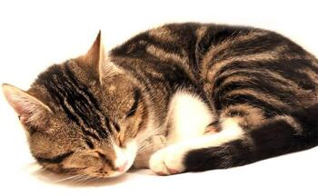

descripcion
- Lus Renato Bustamante Mamani
- 16 Añitos
- Experto en la Informatica
- Chico soltero🖤
- Heterosexual
- La mejor comida es la Pizza
- Futuro Ingeniero de Sistemas
- Antisocial
Soy una persona muy timida, un poco frio pero amable y algo muy importante es que soy detallista, algo que me caracteriza es que siempre me gusta ayudara los demas y me gusta los chocolates y los gatos.
Profesional en temas imformaticos, me gusta jugar a la compu y el fuchibol pero algo mas importante es que me gusta salir con mis amigos y hacer cosas nuevas .